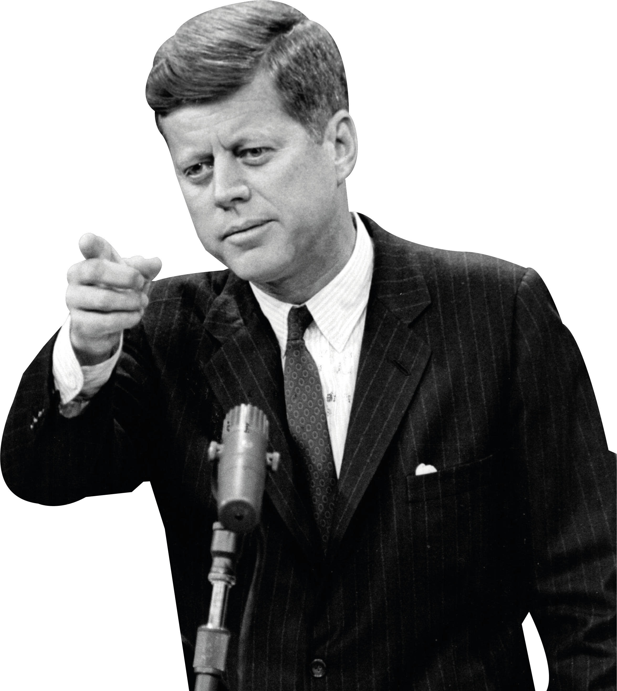
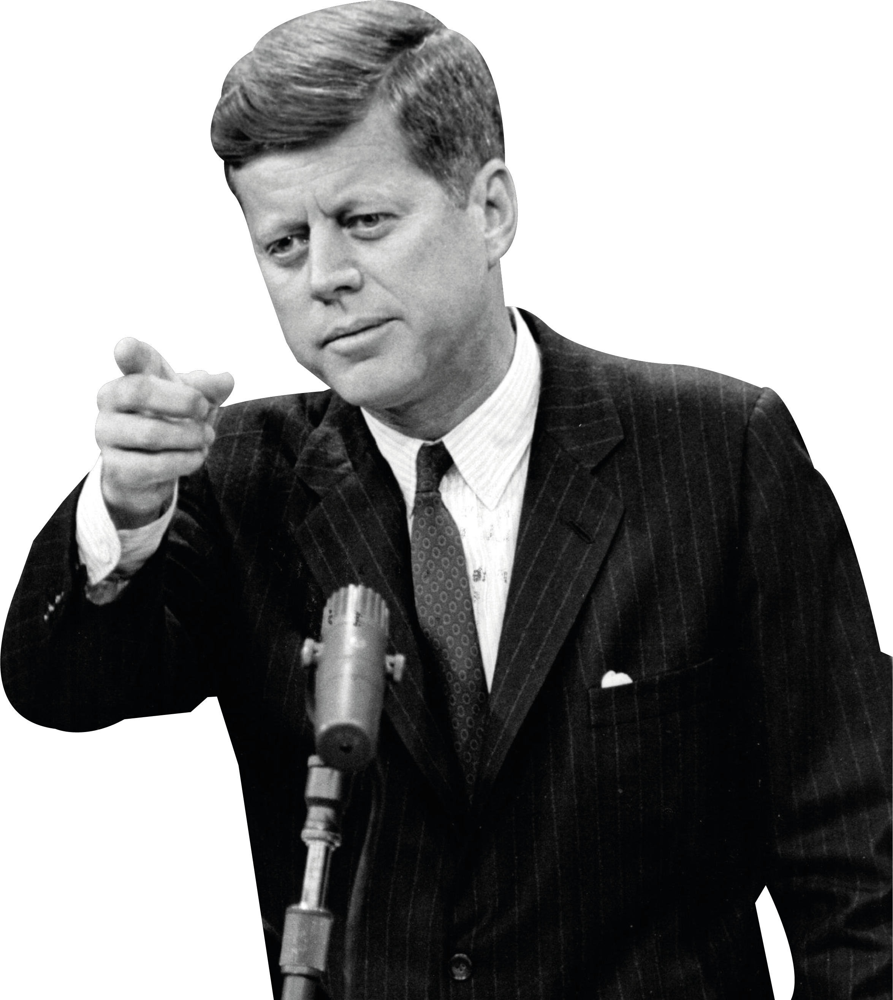

The Climax
1953 – 1980

Oh surprise, the year is 1953 and one dude kicked the bucket. Joseph Stalin became past tense. With
bro’s death, his successor, Nikita Khrushchev, was all about peace and coexistence because, haha,
there is only one planet, why can’t they all be friends? With that policy in mind, Stalin’s name and
policies were thrown under the bus and publicly dissed. But that would only be the tip of the
iceberg
as another drama was unfolding. Cuba had a revolution in 1959, putting Castro into power and
ejecting Batista, the former Cuban dictator who was all cosy with the US. And with its puppet in
Cuba out of the picture, the US were kinda unhappy… to the point that they staged a counter-coup,
sending Cuban exiled troops to invade and take back Cuba with the help of the CIA and… it failed.
Castro was having none of it and while Khrushchev was giving the side eye to US missiles installed
in Turkey, aimed at the USSR, our boy Fidel spoke to Khrushchev and ta-da! Cuba was now homing
Soviet missiles aimed at the US!
Kennedy, the president, was pissed and Khrushchev offered a deal, to remove the US missiles in
Turkey and in return, he’ll remove the missiles in Cuba. After negotiations, they all shook hands,
removed missiles but Castro remained in power, not before becoming the target of 600 assassination
attempts by the CIA. Who else was the target of an assassination attempt? Kennedy! Yeah, bro
received a nasty headshot in front of his wife and friends while parading in the streets of Texas.
The
Soviet secret services looked at each other in that situation wondering if one of them did the deed,
meanwhile the mafia, the FBI and the CIA were pointing fingers at each other too.

Guess who was doing state coups all over the Middle East because some leaders there wanted to
nationalize the oil industry in a big “screw you” move toward Britain? Yeah, the United States were
back at it again, ejecting Mossadegh of Iran in a coup and putting the Shah in power, bringing back
that juicy monarchy. Iran became an ally of the US. Meanwhile, Egypt and Yugoslavia were
showing everyone who was boss and told both the Soviet and the Westerners that they won’t play
everyone’s dirty games, instead, they would focus on themselves and everyone could join the third
gang. There won’t be an option between US or USSR alone, there’s a third one, the Egypt-
Yugoslavia-Indonesia-Ghana-India coalition were playing the BRICS before the concept of BRICS
even existed. Soon, further nations joined them, casually telling the US and the USSR that they
don’t need them.
Meanwhile, the US were not doing good either. After years of racism, century of slavery and
decades of disrespect, the African Americans stood for themselves, unable to stand the bullshi- they
go through. After the war, black soldiers were promised equal loans and an education in US colleges
as well as the right to purchase lands and houses. When the soldiers came back home, the US
government acted like they had amnesia. Worse, lynching was still a thing in the south and one
pastor would shine bright in these dark times, calling for equality. But while Martin Luther King
called for Equality between races, Malcolm X, another preacher and activist, was calling for more
extremist actions because “hey, they lied to us and disrespect us on the daily, why would we ask for
equality from such people?” and both leaders would engage on a nationwide protest, even riots,
walking all the way to Washington DC and putting pressure on officials for fairer treatments.
Wouldn’t go without issues as the US government pointed the activists as hidden communists, paid
by the USSR to disrupt Murica’s peaceful (and racist) way of life. The Kennedy administration would
even tape and spy on MLK, to put him into the light and jail him to no effort. Bro was stronger than
a government. He got shot. Malcolm X would join him to the grave not long after. And Kennedy too.
And Bob Kennedy too. Well, it goes without saying that violent riots erupted nationwide.

But while storm was brewing in the US, another war was looming too. See, after 1945, a young man
was promised to gain independence to his country by France. That man, Ho Chi Minh, bravely
fought in the war, pushing back the Japanese out of Vietnam. When he came back to ask France for
independence for his loyal services, he was treated like an unwanted guest at a party, French
officials acting like he was as annoying as a house fly. Well, this didn’t go well because bro
organized rebellion back in Indochina, the French sent the army to take back their colony and they
got mauled, crying back to the UN and the US for the loss of their colony.
As if that event would trigger a domino effect on surrounding countries acting for independence, the
US had to make a move as for them, these newly freed countries were seduced by the USSR and
China, who had everything to gain if these newly-freed countries became allies. Well, after
Kennedy’s death, fake news was spread on newspapers, that the vietcongs, under Ho Chi Minh,
sank a US boat, justifying a war and protecting the South Vietnamese puppet state under Ngo Dinh
Diem. The Vietcongs fought back savagely, using the cover of the deep jungles to halt US troops and
plane bombings. US terror operations on Viet civilians didn’t make them more afraid of the US, on
the other hand, they got even angrier and joined the Vietcongs like… get em back in blood. And the
resilience of the Viets pushed the US forces slowly, as protests occurred back in the US against the
war, and finally, Ho Chi Minh’s forces took control of Saigon, hold of the South Vietnam regime,
while
Ngo Dinh Diem, ex-Vietnamese president of the Southern part, was assassinated by his own men for
trying to make peace talks with the vietcongs.
The US out, China was poking its nose and openly supported the Khmer regime of Pol Pot, a
murderous psychopath who installed a brutal communist regime in Cambodia. The UN tried to get
sanctions on the country but guess who vetoed it? The US and China! Well, Vietnam was having
none of it either as the Khmer finally snapped and killed Viet citizens in a low move against
Vietnam.
The latter was like “aight, don’t cry when its too painful lil bro” and they clapped the Khmer
forces,
marching to the capital and forcing Pol Pot to flee to Thailand, where bro received asylum by the
king of Thailand, an ally of the US. China disliked the move and in a brief war, they got clapped by
the Viets in 1979.